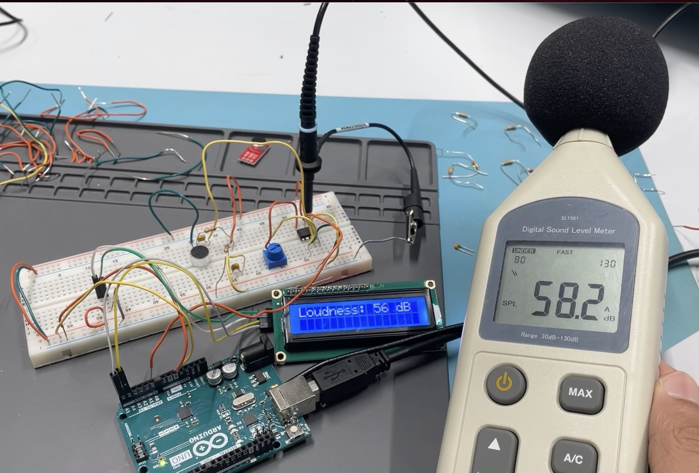
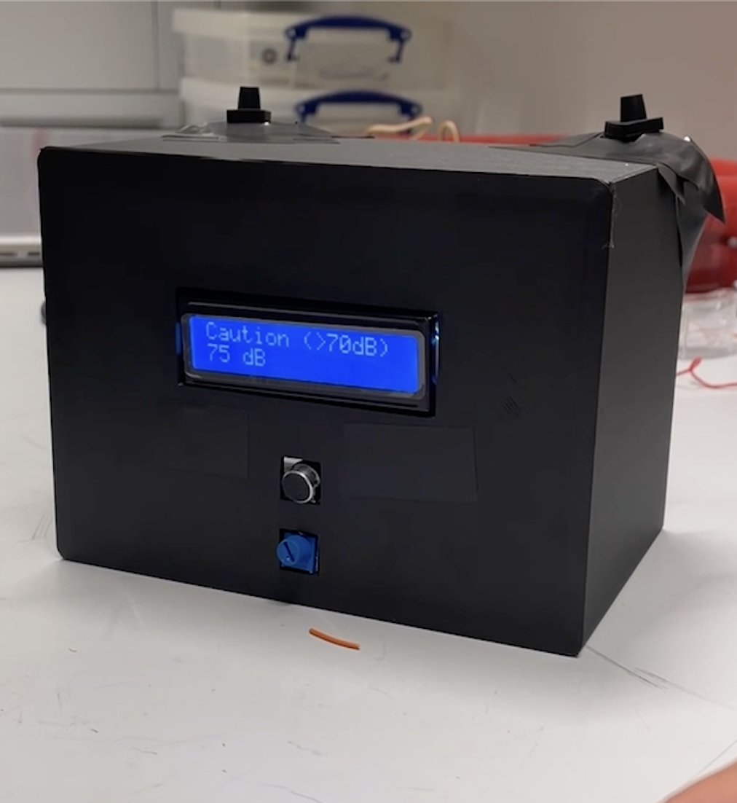
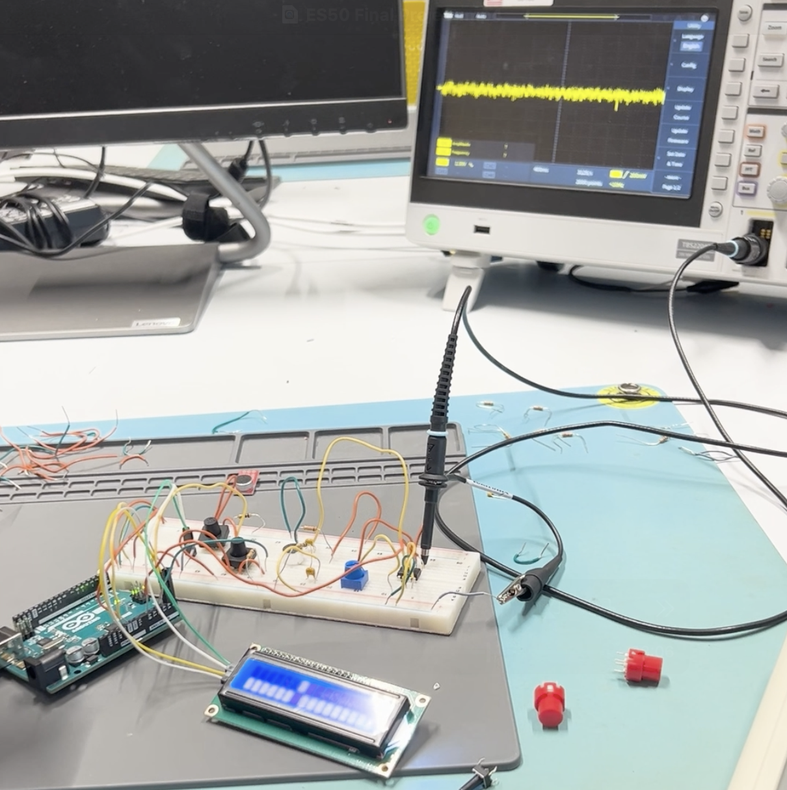
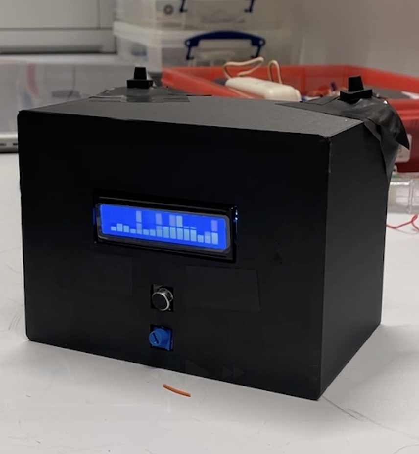

Decibel Meter
Project Overview
Objective
Apply fundamental electrical engineering skills—analog circuit design, circuit layout, and Arduino programming—to design and build a compact decibel meter for measuring environmental sound safety levels. (Introductory Electrical Engineering Class Project)
Details
- Designed an analog amplifier circuit with adjustable microphone input sensitivity using a potentiometer
- Integrated a front-facing microphone to capture ambient sound levels
- Implemented an LED display showing current decibel readings, historical graphs, loud event tracking, and noise safety classification
- Added external push buttons to toggle between multiple display modes
- Designed and fabricated a custom 3D-printed enclosure using SolidWorks
- Constructed the circuit using a combination of breadboarding and soldered connections
Responsibilities
- Collaborated in a two-person team to define project goals, assign tasks, and plan system architecture
- Led circuit design and layout, including schematics, wiring diagrams, breadboard assembly, and soldering
- Assembled and tested the complete decibel meter hardware
- Contributed to Arduino firmware development to convert analog microphone signals into digital decibel readings
Tools & Software
- Arduino (C/C++)
- SolidWorks (CAD)
- 3D printing
- Analog circuit components (resistors, capacitors, operational amplifier, potentiometer, breadboard, wiring)
- Input devices (electret microphone, push buttons)
- LED display
Outcome
Built a portable decibel meter capable of accurately approximating sound levels within a ~7-foot radius and correctly classifying sound intensity into predefined safety thresholds while tracking loud events over time. Received an A letter grade on the project.
Photos




